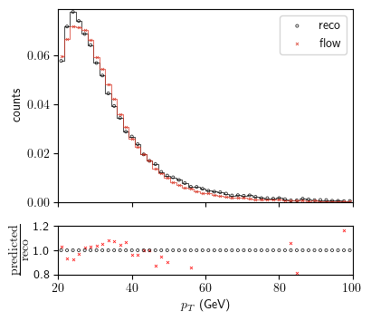
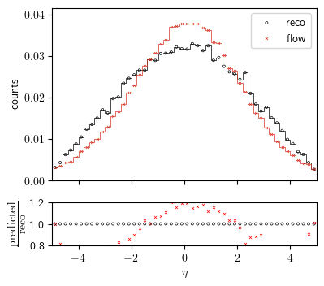
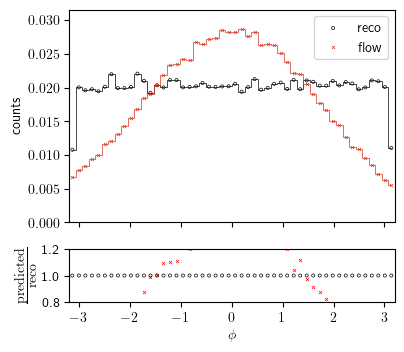
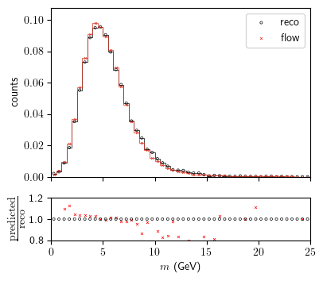

Chapter 5 - Normalizing Flows
Contents
Chapter 5 - Normalizing Flows#
import numpy as np; import pandas as pd
# import scipy as sp; import scipy.stats as st
import torch; import torch.nn as nn; print(f"using torch version {torch.__version__}")
from torch import optim
#use numba's just-in-time compiler to speed things up
# from numba import njit
from sklearn.preprocessing import StandardScaler; from sklearn.model_selection import train_test_split
import matplotlib as mp; print('matplotlib version= ', mp.__version__)
import matplotlib.pyplot as plt;
#reset matplotlib stle/parameters
import matplotlib as mpl
#reset matplotlib parameters to their defaults
mpl.rcParams.update(mpl.rcParamsDefault)
plt.style.use('seaborn-deep')
mp.rcParams['agg.path.chunksize'] = 10000
font_legend = 15; font_axes=15
# LATEX
mp.rcParams.update({"text.usetex": True})
# plt.rcParams['text.usetex'] = True
# mp.rcParams["text.latex.preamble"] = [r"\usepackage{amsmath}"] # for \text command
# %matplotlib inline
import sys; import os
from IPython.display import Image, display
# from importlib import import_module
try:
import optuna
print(f"using (optional) optuna version {optuna.__version__}")
except Exception:
print('optuna is only used for hyperparameter tuning, not critical!')
pass
import argparse
import time
# import sympy as sy
from nflows.flows.base import Flow
from nflows.distributions.normal import StandardNormal
from nflows.transforms.base import CompositeTransform
from nflows.transforms.autoregressive import MaskedAffineAutoregressiveTransform
from nflows.transforms.permutations import ReversePermutation
using torch version 1.11.0.post2
matplotlib version= 3.5.3
using (optional) optuna version 3.0.0
# env = {}
# env.update(os.environ)
# env.update(source(os.environ["IQN_BASE"]))
try:
IQN_BASE = os.environ['IQN_BASE']
print('BASE directoy properly set = ', IQN_BASE)
utils_dir = os.path.join(IQN_BASE, 'utils/')
sys.path.append(utils_dir)
import utils
#usually its not recommended to import everything from a module, but we know
#whats in it so its fine
from utils import *
print('DATA directory also properly set, in %s' % os.environ['DATA_DIR'])
except Exception:
# IQN_BASE=os.getcwd()
print("""\nBASE directory not properly set. Read repo README.\
If you need a function from utils, use the decorator below, or add utils to sys.path\n
You can also do
os.environ['IQN_BASE']=<ABSOLUTE PATH FOR THE IQN REPO>
or
os.environ['IQN_BASE']=os.getcwd()""")
pass
BASE directoy properly set = /home/ali/Desktop/Pulled_Github_Repositories/torchQN
using torch version 1.11.0.post2
matplotlib version= 3.5.3
using (optional) optuna version 3.0.0
BASE directoy properly set = /home/ali/Desktop/Pulled_Github_Repositories/torchQN
DATA directory also properly set, in /home/ali/Desktop/Pulled_Github_Repositories/IQN_HEP/Davidson/data
DATA directory also properly set, in /home/ali/Desktop/Pulled_Github_Repositories/IQN_HEP/Davidson/data
# update fonts
FONTSIZE = 14
font = {'family' : 'serif',
'weight' : 'normal',
'size' : FONTSIZE}
mp.rc('font', **font)
# set usetex = False if LaTex is not
# available on your system or if the
# rendering is too slow
mp.rc('text', usetex=True)
# set a seed to ensure reproducibility
seed = 128
rnd = np.random.RandomState(seed)
#sometimes jupyter doesnt initialize MathJax automatically for latex, so do this:
################################### SET DATA CONFIGURATIONS ###################################
X = ['RecoDatapT', 'RecoDataeta', 'RecoDataphi', 'RecoDatam']
#set order of training:
#pT_first: pT->>m->eta->phi
#m_first: m->pT->eta->phi
#we'll just go with m first since that's the order we discuss in the paper.
ORDER='m_First'
if ORDER=='m_First':
FIELDS = {'RecoDatam' : {'inputs': X,
'xlabel': r'$m$ (GeV)',
'ylabel':'$m^{reco}$',
'xmin': 0,
'xmax': 25},
'RecoDatapT': {'inputs': X,
'xlabel': r'$p_T$ (GeV)' ,
'ylabel': '$p_T^{reco}$',
'xmin' : 20,
'xmax' : 100},
'RecoDataeta': {'inputs': X,
'xlabel': r'$\eta$',
'ylabel':'$\eta^{reco}$',
'xmin' : -5,
'xmax' : 5},
'RecoDataphi' : {'inputs': X,
'xlabel': r'$\phi$' ,
'ylabel' :'$\phi^{reco}$',
'xmin' : -3.2,
'xmax' :3.2}
}
PARAMS_m = {
"n_layers": int(4),
"hidden_size": int(6),
"dropout_1": float(0.6),
"dropout_2": float(0.1),
"activation": "LeakyReLU",
'optimizer_name':'NAdam',
'starting_learning_rate':float(0.7),
'momentum':float(0.6),
'batch_size':int(1024),
'n_iterations': int(2e6),
}
all_variable_cols = [
"genDatapT",
"genDataeta",
"genDataphi",
"genDatam",
"RecoDatapT",
"RecoDataeta",
"RecoDataphi",
"RecoDatam",
]
all_cols = [
"genDatapT",
"genDataeta",
"genDataphi",
"genDatam",
"RecoDatapT",
"RecoDataeta",
"RecoDataphi",
"RecoDatam",
"tau",
]
from joblib import Memory
DATA_DIR = os.environ["DATA_DIR"]
print(f"using DATA_DIR={DATA_DIR}")
# Define a directory on device to cache python functions. One of the best ways is using joblib's Memory module
# with @Memory.cache decorator on top of a function. This saves a huge amount of time, especially in functions
# that require a long time to execute, e.g. loading data.
memory = Memory(DATA_DIR)
print("USING NEW DATASET\n")
######################################
USE_BRADEN_SCALING=False
#####################################
################################### CONFIGURATIONS ###################################
@memory.cache
def load_raw_data():
print(f'SUBSAMPLE = {SUBSAMPLE}')
raw_train_data=pd.read_csv(os.path.join(DATA_DIR,'train_data_10M_2.csv'),
usecols=all_cols,
nrows=SUBSAMPLE
)
raw_test_data=pd.read_csv(os.path.join(DATA_DIR,'test_data_10M_2.csv'),
usecols=all_cols,
nrows=SUBSAMPLE
)
raw_valid_data=pd.read_csv(os.path.join(DATA_DIR,'validation_data_10M_2.csv'),
usecols=all_cols,
nrows=SUBSAMPLE
)
print('\n RAW TRAIN DATA SHAPE\n')
print(raw_train_data.shape)
print('\n RAW TRAIN DATA\n')
raw_train_data.describe()#unscaled
print('\n RAW TEST DATA\ SHAPEn')
print(raw_test_data.shape)
print('\n RAW TEST DATA\n')
raw_test_data.describe()#unscaled
return raw_train_data, raw_test_data, raw_valid_data
JUPYTER = False
use_subsample = True
# use_subsample = True
if use_subsample:
SUBSAMPLE = int(
1e5
) # subsample use for development - in production use whole dataset
else:
SUBSAMPLE = None
########################################################################################
raw_train_data, raw_test_data, raw_valid_data =load_raw_data()
using DATA_DIR=/home/ali/Desktop/Pulled_Github_Repositories/IQN_HEP/Davidson/data
USING NEW DATASET
raw_train_data
| genDatapT | genDataeta | genDataphi | genDatam | RecoDatapT | RecoDataeta | RecoDataphi | RecoDatam | tau | |
|---|---|---|---|---|---|---|---|---|---|
| 0 | 29.4452 | 0.828187 | 2.902130 | 2.85348 | 31.9132 | 0.817082 | 2.919510 | 2.59587 | 0.361310 |
| 1 | 24.3193 | -1.163510 | 0.636469 | 5.83685 | 27.3513 | -1.151020 | 0.652153 | 5.35538 | 0.126899 |
| 2 | 24.3193 | -1.163510 | 0.636469 | 5.83685 | 27.3513 | -1.151020 | 0.652153 | 5.35538 | 0.962307 |
| 3 | 24.3193 | -1.163510 | 0.636469 | 5.83685 | 27.3513 | -1.151020 | 0.652153 | 5.35538 | 0.457282 |
| 4 | 20.1703 | 1.844410 | -0.186685 | 5.69090 | 24.2158 | 1.837910 | -0.160621 | 4.59370 | 0.840862 |
| ... | ... | ... | ... | ... | ... | ... | ... | ... | ... |
| 99995 | 27.3537 | -4.341310 | 2.264160 | 3.59567 | 30.2942 | -4.349530 | 2.209270 | 3.42952 | 0.110503 |
| 99996 | 26.8630 | 4.460970 | 0.381944 | 6.05116 | 23.7580 | 4.521640 | 0.457971 | 4.20833 | 0.526119 |
| 99997 | 26.8630 | 4.460970 | 0.381944 | 6.05116 | 23.7580 | 4.521640 | 0.457971 | 4.20833 | 0.309711 |
| 99998 | 21.3142 | 4.150910 | -2.812330 | 5.26289 | 21.9671 | 4.176750 | -2.887050 | 4.14918 | 0.071362 |
| 99999 | 34.5862 | 2.102200 | -0.435373 | 4.55711 | 44.5515 | 2.093800 | -0.389151 | 6.66738 | 0.191490 |
100000 rows × 9 columns
def normal_split_t_x(df, target, input_features):
"""split dataframe into targets and feature arrays.
Args:
df (pandas.DataFrame): Dataframe of train, test or validation data.
target (str): Choice of "RecoDatapT", "RecoDataeta", "RecoDataphi","RecoDatam" as target.
input_features (list(str)): list of training features labels
Returns:
list(numpy.array): list of numpy array of target and training features
"""
# change from pandas dataframe format to a numpy
# array of the specified types
# t = np.array(df[target])
t = np.array(df[target])
x = np.array(df[input_features])
return t, x
target = "RecoDatapT"
source = FIELDS[target]
features = source["inputs"]
print("Training Features:\n", features)
print("\nTarget = ", target)
print("USING NEW DATASET\n")
Training Features:
['RecoDatapT', 'RecoDataeta', 'RecoDataphi', 'RecoDatam']
Target = RecoDatapT
USING NEW DATASET
print(f"spliting data for {target}")
train_t, train_x = normal_split_t_x(
df=raw_train_data, target=target, input_features=features
)
print("train_t shape = ", train_t.shape, "train_x shape = ", train_x.shape)
print("\n Training features:\n")
print(train_x)
valid_t, valid_x = normal_split_t_x(
df=raw_valid_data, target=target, input_features=features
)
print("valid_t shape = ", valid_t.shape, "valid_x shape = ", valid_x.shape)
test_t, test_x = normal_split_t_x(df=raw_test_data, target=target, input_features=features)
print("test_t shape = ", test_t.shape, "test_x shape = ", test_x.shape)
print("no need to train_test_split since we already have the split dataframes")
print(valid_x.mean(axis=0), valid_x.std(axis=0))
print(train_x.mean(axis=0), train_x.std(axis=0))
print(valid_t.mean(), valid_t.std())
print(train_t.mean(), train_t.std())
NFEATURES = train_x.shape[1]
######################################################
spliting data for RecoDatapT
train_t shape = (100000,) train_x shape = (100000, 4)
Training features:
[[31.9132 0.817082 2.91951 2.59587 ]
[27.3513 -1.15102 0.652153 5.35538 ]
[27.3513 -1.15102 0.652153 5.35538 ]
...
[23.758 4.52164 0.457971 4.20833 ]
[21.9671 4.17675 -2.88705 4.14918 ]
[44.5515 2.0938 -0.389151 6.66738 ]]
valid_t shape = (100000,) valid_x shape = (100000, 4)
test_t shape = (100000,) test_x shape = (100000, 4)
no need to train_test_split since we already have the split dataframes
[ 3.28693884e+01 -1.94726970e-03 -1.08829962e-02 5.56171091e+00] [15.57324857 2.19476169 1.81196705 2.6282735 ]
[3.29671688e+01 2.21612240e-03 7.27381886e-03 5.56540206e+00] [15.77965621 2.21042978 1.80959243 2.68547229]
32.869388404 15.573248566394462
32.967168834000006 15.77965621193832
def get_batch(x, t, batch_size):
# the numpy function choice(length, number)
# selects at random "batch_size" integers from
# the range [0, length-1] corresponding to the
# row indices.
rows = np.random.choice(len(x), batch_size)
batch_x = x[rows]
batch_t = t[rows]
# batch_x.T[-1] = np.random.uniform(0, 1, batch_size)
return (batch_x, batch_t)
train#
num_layers = 10
N_FEATURES=train_x.shape[1]
base_dist = StandardNormal(shape=[N_FEATURES])
transforms = []
for _ in range(num_layers):
transforms.append(ReversePermutation(features=N_FEATURES))
transforms.append(MaskedAffineAutoregressiveTransform(features=N_FEATURES,
hidden_features=4))
transform = CompositeTransform(transforms)
flow = Flow(transform, base_dist)
optimizer = optim.Adam(flow.parameters())
def train_flow(n_iterations):
for i in range(n_iterations):
batch_x, batch_t = get_batch(train_x, train_t, 58)
x = torch.tensor(batch_x, dtype=torch.float32)
optimizer.zero_grad()
loss = -flow.log_prob(inputs = x).mean()
loss.backward()
optimizer.step()
train_flow(5000)
test_x.shape
(100000, 4)
def evaluate_flow():
test_X=torch.tensor(test_x, dtype=torch.float32)
likelihood = flow.log_prob(test_X).exp()
return likelihood
likelihood = evaluate_flow()
likelihood.shape
torch.Size([100000])
samples = flow.sample(test_x.shape[0]).detach().numpy()
samples
array([[25.142113 , -3.3062284 , -0.49941838, 6.0706935 ],
[54.25011 , -1.6250437 , -2.0517218 , 8.605469 ],
[34.54987 , -1.2403871 , 0.6491311 , 6.8237805 ],
...,
[33.811314 , 2.12686 , -1.2807467 , 6.374767 ],
[22.655596 , 0.8908781 , 2.1754103 , 4.3618817 ],
[33.555767 , -0.35557398, -0.30414277, 2.9271367 ]],
dtype=float32)
Plot#
def get_hist_simple(predicted_dist, target):
range_ = (FIELDS[target]["xmin"], FIELDS[target]["xmax"])
bins=50
predicted_label_counts, label_edges = np.histogram(
predicted_dist, range=range_, bins=bins
)
REAL_DIST = raw_test_data[target]
real_label_counts, _ = np.histogram(REAL_DIST, range=range_, bins=bins)
label_edges = label_edges[1:] / 2 + label_edges[:-1] / 2
return real_label_counts, predicted_label_counts, label_edges
raw_test_data[target]
0 44.3274
1 44.3274
2 27.4750
3 33.8797
4 23.3141
...
99995 30.4103
99996 30.1372
99997 30.1372
99998 21.2735
99999 27.0770
Name: RecoDatapT, Length: 100000, dtype: float64
def plot_one(
target, real_edges, real_counts, predicted_counts, save_plot=False, PARAMS=None, JUPYTER=True
):
norm_data = raw_test_data.shape[0]
norm_predicted = samples.shape[0]
fig, (ax1, ax2) = plt.subplots(
2, 1, figsize=(3.5 * 3 / 2.5, 3.8), gridspec_kw={"height_ratios": [2, 0.5]}
)
ax1.step(
real_edges, real_counts / norm_data, where="mid", color="k", linewidth=0.5
) # step real_count_pt
ax1.step(
real_edges,
predicted_counts / norm_predicted,
where="mid",
color="#D7301F",
linewidth=0.5,
) # step predicted_count_pt
ax1.scatter(
real_edges,
real_counts / norm_data,
label="reco",
color="k",
facecolors="none",
marker="o",
s=5,
linewidth=0.5,
)
ax1.scatter(
real_edges,
predicted_counts / norm_predicted,
label="flow",
color="#D7301F",
marker="x",
s=5,
linewidth=0.5,
)
ax1.set_xlim(range_)
ax1.set_ylim(0, max(predicted_counts / norm_predicted) * 1.1)
ax1.set_ylabel("counts")
ax1.set_xticklabels([])
ax1.legend(loc="upper right")
ratio = (predicted_counts / norm_predicted) / (real_counts / norm_data)
ax2.scatter(
real_edges, ratio, color="r", marker="x", s=5, linewidth=0.5
) # PREDICTED (IQN)/Reco (Data)
ax2.scatter(
real_edges,
ratio / ratio,
color="k",
marker="o",
facecolors="none",
s=5,
linewidth=0.5,
)
ax2.set_xlim(range_)
ax2.set_xlabel(FIELDS[target]["xlabel"])
ax2.set_ylabel(
r"$\frac{\textnormal{predicted}}{\textnormal{reco}}$"
# , fontsize=10
)
ax2.set_ylim((YLIM))
ax2.set_xlim(range_)
ax2.set_yticklabels([0.8, 1.0, 1.2])
# if JUPYTER==True:
# plt.show()
# else:
# plt.tight_layout()
# fig.subplots_adjust(wspace=0.5, hspace=0.2)
# fig.subplots_adjust(wspace=0.0, hspace=0.1)
# plt.axis('off')
if save_plot:
# plot_filename = utils.get_model_filename(target, PARAMS).split(".dict")[0] + ".png"
plot_filename = 'NF_' + target + '.pdf'
plt.savefig(
os.path.join(IQN_BASE, "JupyterBook",
"images", "NF", plot_filename),
)
fig.show()
plt.show();
# plt.axis("off")
# plt.gca().set_position([0, 0, 1, 1])
\(p_T\)#
target = 'RecoDatapT'
range_ = (FIELDS[target]["xmin"], FIELDS[target]["xmax"])
bins = 50
YLIM = (0.8, 1.2)
real_label_counts_pT, predicted_label_counts_pT, label_edges_pT = get_hist_simple(
predicted_dist=samples[:,0], target=target
)
plot_one(
target=target,
real_edges=label_edges_pT,
real_counts=real_label_counts_pT,
predicted_counts=predicted_label_counts_pT,
save_plot=True,
PARAMS=PARAMS_m
)

\(\eta\)#
target = 'RecoDataeta'
range_ = (FIELDS[target]["xmin"], FIELDS[target]["xmax"])
bins = 50
YLIM = (0.8, 1.2)
real_label_counts_eta, predicted_label_counts_eta, label_edges_eta = get_hist_simple(
predicted_dist=samples[:,1], target=target
)
plot_one(
target=target,
real_edges=label_edges_eta,
real_counts=real_label_counts_eta,
predicted_counts=predicted_label_counts_eta,
save_plot=True,
PARAMS=PARAMS_m
)

\(\phi\)#
target = 'RecoDataphi'
range_ = (FIELDS[target]["xmin"], FIELDS[target]["xmax"])
bins = 50
YLIM = (0.8, 1.2)
real_label_counts_phi, predicted_label_counts_phi, label_edges_phi = get_hist_simple(
predicted_dist=samples[:,2], target=target
)
plot_one(
target=target,
real_edges=label_edges_phi,
real_counts=real_label_counts_phi,
predicted_counts=predicted_label_counts_phi,
save_plot=True,
PARAMS=PARAMS_m
)

\(m\)#
target = 'RecoDatam'
range_ = (FIELDS[target]["xmin"], FIELDS[target]["xmax"])
bins = 50
YLIM = (0.8, 1.2)
real_label_counts_m, predicted_label_counts_m, label_edges_m = get_hist_simple(
predicted_dist=samples[:,3], target=target
)
plot_one(
target=target,
real_edges=label_edges_m,
real_counts=real_label_counts_m,
predicted_counts=predicted_label_counts_m,
save_plot=True,
PARAMS=PARAMS_m
)
